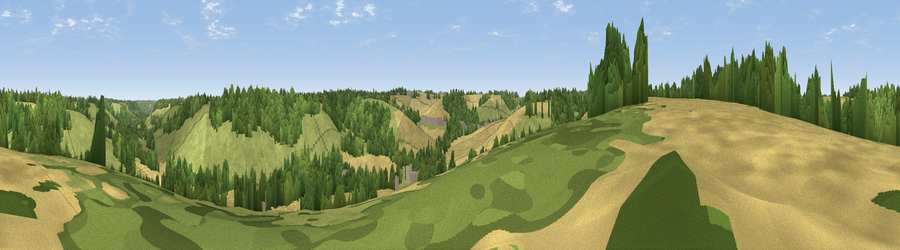

Viewpoint near Old Hawkinge
#40286 in England · top 65% of its area beats it · near Old Hawkinge · access?Where it is
The exact computed spot (TR 23725 40825). Click the marker for map links.
Public access: no public right of way or access land is recorded at this exact spot — it may be on private land. Computed from Natural England's CRoW access layer and OpenStreetMap rights of way — not the legal definitive map. Always verify locally.
The view, rendered

A 360° render of this exact spot computed from the terrain model, tree cover and land cover — summer colours, afternoon light, calibrated against photographs of famous viewpoints. Real trees, hedges and buildings will differ in detail.
The panorama
Grey silhouette: terrain skyline in each direction (720 bearings, Earth curvature and refraction included). Dashed green: skyline with trees (+15 m) and buildings (+8 m) as obstacles. Blue strip: how far the ground is visible on each bearing.
Where the view opens
Wedge length = distance to the farthest visible ground on that bearing (vegetation-aware). Rings at 10, 25 and 50 km.
What fills the view
40% grassland · 30% cropland · 29% woodland ·
Angular shares of the visible panorama (visual magnitude), not map area. Landscape diversity 0.49 (0–1 Shannon).
Key numbers
More beautiful places nearby
The staircase of upgrades: each row has a higher view potential than everything closer. Driving times are estimates from straight-line distance, calibrated against real road routing — check an actual route before setting out.
| Place | Direction | Drive | Score |
|---|---|---|---|
| Viewpoint near Alkham | NNE · 1 km | ~2 min | 26.6 |
| Viewpoint near Alkham | ENE · 1 km | ~4 min | 28.9 |
| Viewpoint near Old Hawkinge | SSW · 3 km | ~7 min | 76.9 |
| Viewpoint near Capel-le-Ferne | S · 3 km | ~7 min | 80.2 |
| Viewpoint near Willingdon | WSW · 76 km | ~100 min | 83.4 |
| Wilmington Hill | WSW · 78 km | ~102 min | 85.4 |
| Viewpoint near Alciston | WSW · 82 km | ~107 min | 85.8 |
| Viewpoint near Alciston | WSW · 82 km | ~107 min | 86.8 |
51.12300, 1.19568 · source: screening · position refined by local search. Computed location — check access rights before visiting.